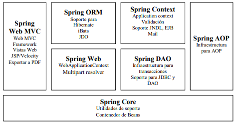

Spring framework es un software libre, desarrollado por la Spring Source, este framework puede ser utilizado en contenedores web, dispensando servidores de aplicaciones como JEE (Java Enterprise Edition) y JBoss. Realizar la configuración inicial de dicho framework suele ser bastante tedioso por lo que el equipo de Spring lanzó Spring Boot, el cual simplifica este proceso de manera significativa.
Este framework nos proporciona varias características entre las que podemos destacar la inyección de dependencias, la gestión de transacciones, el soporte para pruebas automatizadas y el soporte orientado a aspectos de programación, [1].
Spring tiene varios frameworks complementarios que son:
Spring MVC: Este es utilizado para el desarrollo de aplicaciones web (este es parte e spring framework).
Spring Security: Este es utilizado para la inserción de funcionalidades para la autenticación y autorización.
Spring Data: Destinado para aplicaciones que utilizan nuevas tecnologías de almacenamiento de datos como base de datos y servicios en la nube.
Spring web Services: Utilizado para la creación de servicios web basados en SOAP.
Spring web Flow: Este es una extensión de Spring MVC que permite la implementación de flujos (Wizards) entre pantallas, [2].
Historia
Al desarrollador Rod Johnson se le ocurrió la idea de Spring y se empezó a escribir a partir del año 2000.
Dos años más tarde, en 2002, aparece la primera versión de Spring Framework (la versión 0.9) creada por Rob Johnson. Y ese mismo año, aparece también el famoso libro “Expert One-on-One J2EE Design and Development” de Rod Johnson. Rod, tardó 9 meses en escribirlo.
Fue creado gracias a la colaboración de grandes programadores, entre ellos se encuentran como principales partícipes y líderes de este proyecto Rod Johnson y Jürgen Hõller. Estos dos desarrolladores, además de otros colaboradores que juntando toda su experiencia en el desarrollo de aplicaciones J2EE (Java 2 Enterprise Editions), incluyendo EJB (Enterprise JavaBeans), Servlets y JSP (Java Server Pages), lograron combinar dichas herramientas y otras más en un sólo paquete, para brindar una estructura más sólida y un mejor soporte para este tipo de aplicaciones, [3].
En 2003, un año después de la publicación del libro, se creó un equipo de desarrolladores que buscaban extender el framework en Sourceforge.Y que publicaron la versión 0.9 (no era la release).
En 2004, fue cuando apareció el primer gran lanzamiento, oficial de Spring la versión 1.0 con la licencia de Apache 2.0.
En 2006, llegó Spring 2.0, tratando de simplificar los archivos de configuración XML y dar soporte a Java 5. En 2007, la consultoría que habían creado Interface21, cambia su nombre a SpringSource. Y también, llegó Spring 2.5, que introdujo nuevas funciones como las configuraciones de anotación.
Arquitectura de Spring
Spring es un framework modular que cuenta con una arquitectura divida en siete capas o módulos lo cual permite tomar y ocupar únicamente las partes que interesen para el proyecto y juntarlas con gran Libertad.
Spring Core: Es el componente central del marco Spring, proporciona el contenedor IoC. Hay dos tipos de implementaciones del contenedor Spring, a saber, la fábrica Bean y el contexto de la aplicación. La fábrica Bean se define mediante la interfaz org.springframework.beans.factory.BeanFactory y actúa como un contenedor para los Bean. El contenedor de la fábrica de Bean le permite desacoplar la configuración y especificación de las dependencias de la lógica del programa.
Spring AOP: AOP desglosa los programas en aspectos o preocupaciones. El módulo Spring AOP le permite implementar preocupaciones o aspectos en una aplicación Spring en Spring AOP, los aspectos son los beans Spring regulares o las clases regulares anotadas con la anotación @Aspect. Estos aspectos ayudan en la gestión de transacciones y en el registro y monitoreo de fallas de una aplicación. Por ejemplo, la gestión de transacciones es necesaria en las operaciones bancarias, como la transferencia de una cantidad de una cuenta a otra.
Spring ORM: Se utiliza para acceder a datos de bases de datos en una aplicación. Proporciona API para manipular bases de datos con JDO, Hibernate e iBatis. Spring ORM es compatible con DAO, que proporciona una forma conveniente de crear las siguientes soluciones ORM basadas en DAO: Gestión simple de transacciones declarativas, Manejo transparente de excepciones, Clases de plantillas ligeras y seguras para subprocesos, Clases de apoyo DAO y Administracion de recursos.
Spring Web MVC: La arquitectura MVC para crear aplicaciones web. Separa el código del modelo y los componentes de vista de una aplicación web. En Spring MVC, cuando se genera una solicitud desde el navegador, primero va a la clase DispatcherServlet (controlador frontal), que envía la solicitud a un controlador (clase SimpleFormController o clase AbstractWizardformController) utilizando un conjunto de asignaciones de controladores. El controlador extrae y procesa la información incluida en una solicitud y envía el resultado a la clase DispatcherServlet en forma de objeto modelo. Finalmente, la clase DispatcherServlet usa clases ViewResolver para enviar los resultados a una vista, que muestra estos resultados a los usuarios.
Spring Web Flow, el módulo: Es una extensión del módulo Spring Web MVC. El marco Spring Web MVC proporciona controladores de formulario, como la clase SimpleFormController y la clase AbstractWizardFormController, para implementar un flujo de trabajo predefinido. Spring Web Flow ayuda a definir el archivo XML o la clase Java que administra el flujo de trabajo entre diferentes páginas de una aplicación web. Spring Web Flow se distribuye por separado.Las siguientes son las ventajas de Spring Web Flow:
El flujo entre las diferentes IU de la aplicación se proporciona claramente definiendo el flujo web en un archivo XML.
Las definiciones de flujo web le ayudan a dividir virtualmente una aplicación en diferentes módulos y reutilizar estos módulos en múltiples situaciones.
El ciclo de vida de Spring Web Flow se puede administrar automáticamente
DAO de Spring Web: El paquete DAO proporciona soporte DAO mediante el uso de tecnologías de acceso a datos como JDBC, Hibernate o JDO. Este módulo introduce una capa de abstracción JDBC al eliminar la necesidad de proporcionar codificación JDBC tediosa. También proporciona clases de gestión de transacciones programáticas y declarativas. El paquete Spring DAO admite conectividad heterogénea de bases de datos Java y mapeo O / R, lo que ayuda a Spring a trabajar con varias tecnologías de acceso a datos.
Contexto de la aplicación Spring: Se basa en el módulo Core. El contexto de la aplicación org.springframework.context.ApplicationContext es una interfaz de BeanFactory. Este módulo deriva su característica del paquete org.springframework.beans y también admite funcionalidades como internacionalización (I18N), validación, propagación de eventos y carga de recursos. El contexto de la aplicación implementa la interfaz MessageSource y proporciona la funcionalidad de mensajería a una aplicación, [2].
Notaciones principales de Spring
@Required, esta anotación se aplica principalmente al método “setters” de beans. Esta notación dará a entender que una propiedad es requerida, en caso contrario se genera una excepción.
@Autowired, esta anotación inyecta la dependencia del objeto implícitamente, básicamente podemos decir que esta notación crea los lazos entre los distintos elementos.
@Qualifier, esta anotación se usa junto con @Autowired. Esta notación se utiliza cuando se tiene más de un vean del mismo tipo y se desea conectar solo con uno de ellos con una propiedad.
@Configuration, una clase Java anotada con @Configuration es una configuración en sí misma y tendrá métodos para crear instancias y configurar las dependencias.
[1] UnyPaython, Spring Boot, Mexico: https://unipython.com/que-es-el-framework-spring-y-las-ventajas-de-utilizarlo/, 2020.
[2] C. Á. Caules, Spring boot, Mexico: https://www.arquitecturajava.com/que-es-spring-boot/, 2021.